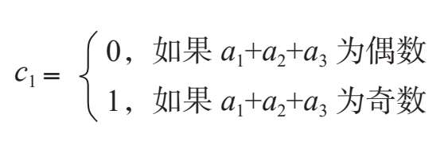
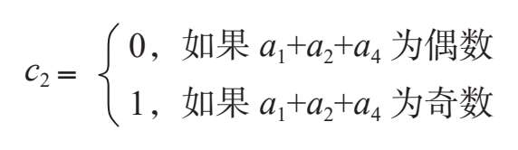
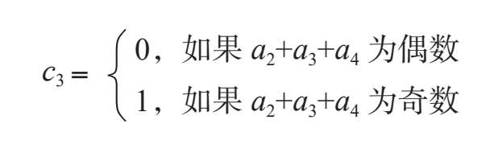
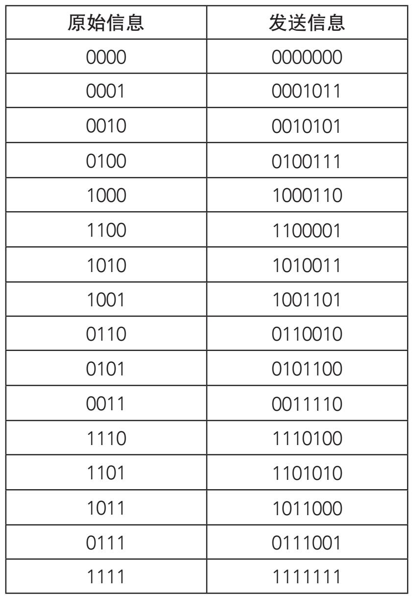
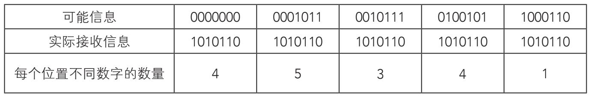
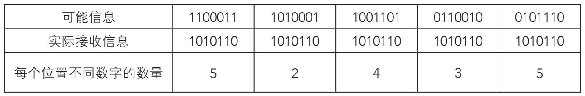
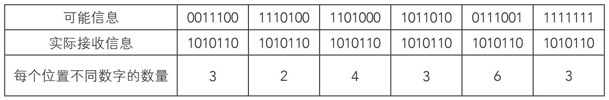
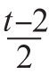
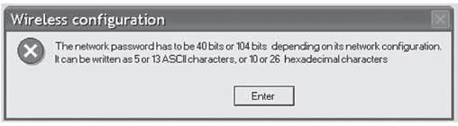

因为有了上述代码，计算机与计算机之间、程序与程序之间以及用户与用户之间的有效保密通信成为可能。但这种线上语言是以信息的统一理论为基础的，理论本身就以通信过程为基础。制定这个理论的第一步如此基础，有时容易被忽视，那就是如何度量信息。
像“2kB attachment”这样简单的短语是基于一系列聪明的直觉，这些直觉都始于1948年美国工程师克劳德·香农（Claude E. Shannon）在《贝尔系统技术杂志》上发表的一篇题为“通信的数学原理”的文章，之后，他的灵感一个接一个涌出。这篇文章影响巨大，香农在文中提出，度量信息大小的单位叫作比特。引领香农走向研究之路的一般问题，对于现代读者来说并不陌生。加密信息以防止在传输过程中损坏的最佳方法是什么？香农得出结论：不可能编出一套总能避免信息丢失的代码。换句话说，只要有信息传递，错误就不可避免。不过，这个结论并没有中断编码标准的确立，即便不能防止信息被损毁，但至少能保证具有最高的可靠性。
在信息的数字传输中，信息一旦经由发送者产生（由非人类，如计算机或其他设备代理此事简单易行），则该信息用二进制加密，进入收发双方各自的计算机以及连接本身在内的通信通道——可以是有线，也可以是无线（如无线电波、红外波等）。通道中的传输过程最为敏感，因为信息会受到各种干涉，包括与其他信号混杂、物理媒介温度的不利影响、在媒介中传播时信号减弱等。人们把这些干涉的源头称为“干扰”（noise）。
为了使干扰影响最小化，不仅需要保护连接线路，还必须创建一种探测并纠正错误的方法。
其中一种方法叫作“冗余”——按照规定的标准，重复信息的某些特点。为厘清这个过程，请看下面这个例子。想象存在一份文本，其中每个单词都由4比特构成，总单词数为16（24=16），每个单词的样式均为（a1 a2 a3 a4）。在发送信息之前，我们在单词上添加3个多余的比特（c1 c2 c3），这样通过通信通道的编码信息形式为（a1 a2 a3 a4 c1 c2 c3）。c1 c2 c3会确保信息的安全——被称为“奇偶检验码”——其产生如下所示：



我们把下列奇偶检验码指定给信息0111：
因为0+1+1=2为偶数，所以数字c1=0
因为0+1+1=2为偶数，所以数字c2=0
因为1+1+1=3为奇数，所以数字c3=1
结果，信息0111发送时为0111001。下列16个“单词”发送版如下表所示：

未获奖的天才
克劳德·香农（1916—2001）是20世纪最伟大的科学家之一。他曾就读于密歇根大学和麻省理工学院，专业是电气工程，后以数学家的身份在贝尔实验室工作，研究密码学和通信理论。他对信息论的贡献足以让他位列发明家名录的前茅，但由于他的研究介于数学和信息论之间，因此与所有科学家梦寐以求的诺贝尔奖失之交臂。
假设在传输的末端，即接收系统收到的信息是1010110。注意，如果这个二进制数字避开了所有可能的信息，那就必然出现了传输错误。若要纠正这个错误，将系统使用所有可能信息的数字与接收信息的每个数字进行比较，查找可能性较高的选择。为此，它检查了数字可能出现错误的数量，具体如下页表所示：



错误的1010110与1000110只有一个数字之差。鉴于这个误差最小，系统会给接收者提供第二个，也就是纠正后的版本。这个原理类似于文字处理软件中的“拼写检查”，一旦检查到一个词语与它的内部词典不符，就会给出一些接近的选项。人们把信息看作字符序列，一条信息区别于另一条信息的位置数叫作“两个序列之间的距离”。这个误差检测和误差校正的具体机制是与克劳德·香农同时代的美国人理查德·W.海明（Richard W. Hamming，1915-1998）提出的。
如同在其他领域一样，在信息领域检测可能的错误是一回事，而校正这些错误又是另一回事。在加密中，比如上一个例子，如果最小距离只有一个备选，那问题就简单多了。如果我们把1出现在序列中最小次数定为t（数列全为0的情况除外），可以确定：
假如t为奇数，可以校正的错误
假如t为偶数，可以校正

的错误如果我们只是检测错误，那么能够检测到的最小数量为t-1。前面我们已经详述过十六进制的语言，如果t=3，那么这个机制就能检测出3-1=2个错误，并纠正(3-1):2=1个错误。
第三代加密术
1997年，为使无线网络信息安全传输，引入了名为WEP（有线等效保密）的协议。此协议包括名为RC4的加密算法，它有两种编码方式，各由5个和13个ASCII字符构成。因此，我们也可以说编码由40或104比特构成，或者由10或26个十六进制字符构成：
5个字母或数字的字符=40比特=10个十六进制字符
13个字母或数字的字符=104比特=26个十六进制字符
连接提供者提供编码，但用户一般可以更改。建立连接之前，计算机会请求密钥。下页对话框中，可以看到弹出一条错误信息，请求WEP密钥，明确说明了比特、ASCII字符及十六进制字符的长度：

实际上，真正的密钥还要更长。从用户提供的密钥开始，RC4算法产生更多比特的新密钥，而这个密钥是用来加密传输的。这是一种公钥密码学，在本书第五章中会有详细解释。想更改密钥的用户会发现，相比5个字母或数字字符的密钥，记忆10个十六进制字符的密钥保密性更高，且更好记，虽然两者比特大小相同。当然，同样确定的是，“james”与它对应的十六进制表达“6A616D6573”相比，也更方便识记。